STAY · 待確認
住宿待確認
酒店尚未確定。確認後將補充準確地址、交通定位和精確物業圖片。
JAVA · INDONESIA
兩座城市，一條主軸：從雅加達的老城與商場街，走進日惹的石雕、火山與手作。八天裡把經典留給清晨，把街頭留給傍晚。
印尼爪哇的行程、住宿、餐飲與出發準備，都可以從這裡繼續。
TRANSPORT
補充具體航班、車次、日期、機場或車站後，本頁會同步更新全部交通卡與說明。
THE ROUTE
前兩天在雅加達完成軟著陸、老城漫遊與商場補給，之後六天以日惹為基地，向外輻射婆羅浮屠、普蘭巴南、默拉皮火山與南部海岸。
PART ONE
航班與入境上午在航班上度過，落地蘇加諾-哈達機場後先完成入境與行李，出關時間視航站樓與隊伍長度浮動。
下午機場到 Thamrin搭機場快線或叫車進中區，先到 Grand Indonesia 換匯、買本地電話卡與瓶裝水，順便在空調裡緩一緩時差與暑氣。
晚上Menteng 的第一頓步行到 Menteng 的 Kaum 吃群島菜，用一份沙嗲拼盤和炭烤魚把這趟旅行的味覺座標先立起來，飯後沿街走回住處。
法塔希拉廣場先進雅加達歷史博物館看老市政廳的地牢與傢俱陳列，出來後沿廣場四周繞一圈，看彩色腳踏車攤與街頭藝人怎麼把這塊方磚地填滿。
下午清真寺與國家博物館移動到中區，先在伊斯蒂克拉爾清真寺參加免費導覽看巨型穹頂，再穿過馬路到印尼國家博物館補齊爪哇文明的時間線。
晚上紀念塔與 Thamrin傍晚在獨立廣場的草坪一側看紀念塔亮燈，之後步行到 Sarinah 逛本土工藝樓層，把要送人的那份伴手禮在這裡定下來。
PART TWO
飛往日惹上午從雅加達飛日惹國際機場，航程約一小時十分；落地後搭機場鐵路進 Tugu 車站，比包車穩定得多。
下午Wijilan 與百年市場先在王宮東側的 Wijilan 街吃 gudeg 當正餐，再走進 Beringharjo 市場翻布料與舊物，把手繪、印章與機印三種蠟染的價差摸清楚。
晚上主街與城市原點沿 Malioboro 一路往北，逛完蠟染百貨後在街邊 angkringan 喝一杯薑茶，最後到 Tugu 紀念碑看夜燈下的城市中軸。
婆羅浮屠五點半從市區出發，趕在開園後第一批進場，從東側迴廊按順時針把浮雕走完再上到塔頂露臺，斜光時段石面紋理最清楚。
下午塔曼沙麗水宮回城後先補一頓輕食，再進水宮看沐浴池與地下環形清真寺的交叉樓梯，巷弄密集但單向標識清楚，跟著走就不會繞。
晚上王宮料理與皮影夜場傍晚在王宮圍牆內的 Bale Raos 吃一頓宮廷菜，晚上到索諾布多約博物館的東亭看皮影，中場可以走到幕布背面看操偶手法。
默拉皮吉普線從 Kaliurang 山道的集合點出發，沿 2010 年火山碎屑流留下的河床往上，中途停遺物博物館與巨石，最後到掩體點看山體正面。
下午稻田邊的午飯與銀匠區下山順路在 Kaliurang 十六公里處的老宅吃自助爪哇菜，之後橫穿城市到東南角的 Kotagede，那裡前店後廠的銀器鋪子還開著工作臺。
晚上班圖爾的鐵籤羊肉傍晚往南開半小時到班圖爾，吃只用鹽調味、串在腳踏車輻條上烤的 klathak 羊肉，配一碗清湯收尾。
普蘭巴南廟群開園後先進中央院落，圍著溼婆塔把羅摩衍那浮雕走一圈，再往外圈看成排的高瘦塔尖，園區遮蔭少要趁早。
下午普拉奧桑與臺地午餐轉到東北兩公里外被稻田包圍的普拉奧桑，遊客少得多；之後上到拉圖博科同一條臺地上的露臺餐廳吃飯，正對日惹平原。
晚上門闕日落與羅摩衍那下午晚些進拉圖博科，等太陽壓到石砌門闕背後的那半小時，隨後直接到露天劇場看以甘美蘭現場伴奏的羅摩衍那舞劇。
Nglanggeran 古火山清晨從市區往東南開一小時，沿安山岩巨塊之間的石縫往上爬，山頂能一路看到日惹平原和南部海岸線的方向。
下午Tirtodipuran 的蠟染課回城後在手工藝街的家族工坊裡從描稿、走蠟到浸染完整做一遍，兩三個小時下來就能分辨手繪、印章與機印布的差別。
晚上主街邊收工把布留在工坊晾乾打包，步行到 Malioboro 的商場裡吃一份牛油果刨冰和湯麵，用最省力的方式結束這一天。
蘇丹王宮開門就進，先看白色柱廊與彩繪樑架，再到中庭等上午的甘美蘭或宮廷舞場次，宮廷侍從會站在各個廳堂之間。
下午前往機場從王宮回住處取行李後到 Tugu 車站搭機場鐵路，四十分鐘直達日惹國際機場，比包車更能算準時間。
晚上返程航班在機場完成值機與安檢，含液體的香料油與醬料必須託運，銀器與蠟染布可以隨身攜帶。
SIGHTS
已排入行程的核心景點，以及同區域可自由替換的備選。
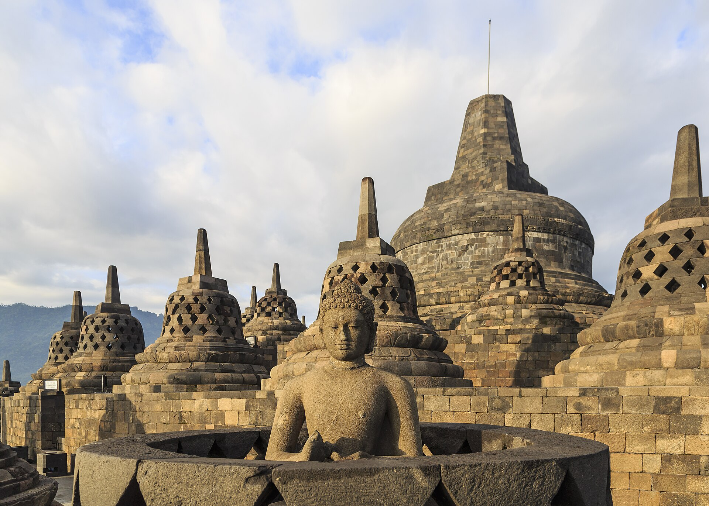
馬格朗 · 中爪哇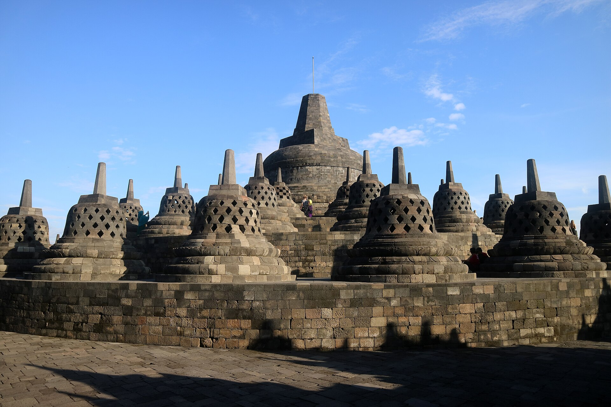
九世紀的佛教石構曼陀羅，四層迴廊有超過一千面浮雕，最上層是被鐘形佛塔圍繞的中央大塔。清晨的斜光會把石面紋理和遠處默拉皮火山的輪廓同時打出來，是整趟行程視覺分量最重的一處。登頂名額分批發放，需要另外購買含登頂的票種並穿指定草鞋。
開放約 06:30–16:30（登頂時段另行分配） · 全年開放
Google Maps ↗官網 ↗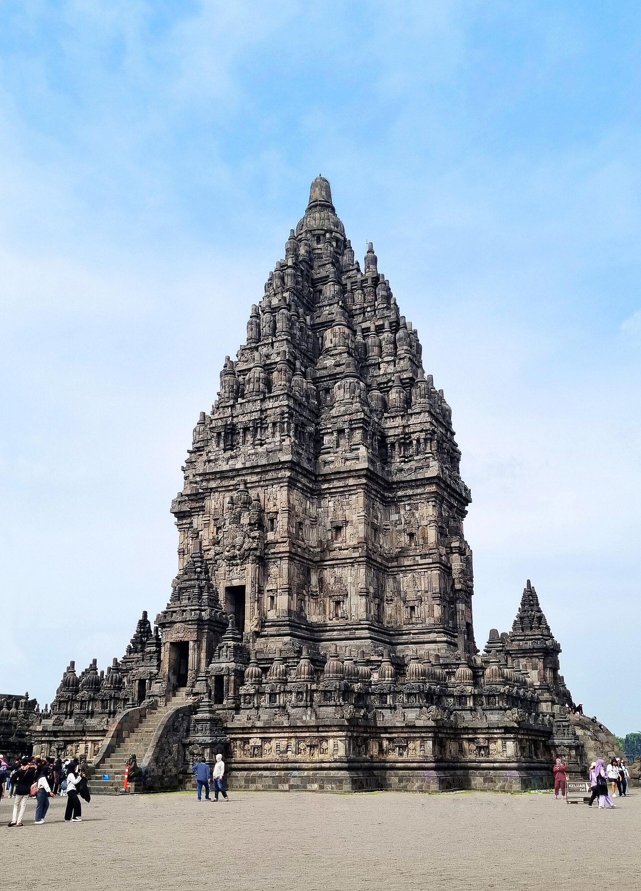
斯萊曼 · 日惹東郊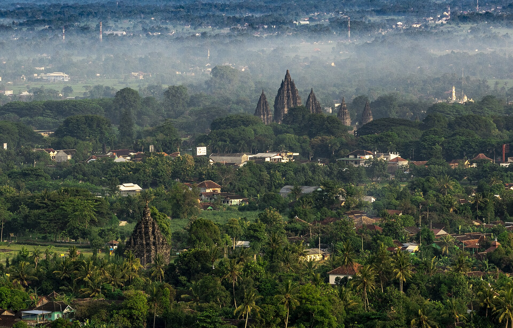
印尼規模最大的印度教廟群，中央溼婆塔高約四十七米，塔身佈滿羅摩衍那敘事浮雕，周圍是成排的高瘦塔尖。和婆羅浮屠的厚重橫向體量正好相反，這裡適合用豎構圖和低角度拍尖塔陣列。園區很開闊，遮蔭少，儘量避開正午。
開放約 06:30–16:30（露天劇場夜場另計） · 全年開放
Google Maps ↗官網 ↗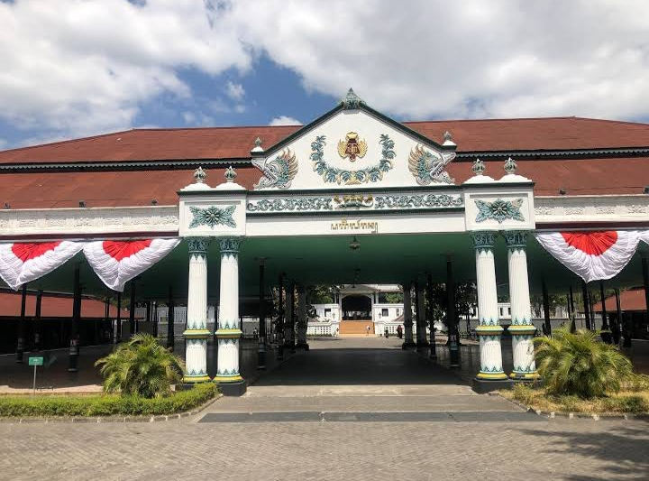
日惹老城中軸十八世紀至今仍在使用的蘇丹宮廷，白色柱廊、彩繪樑架與開放式廳堂構成日惹城市中軸的核心。宮內有身著傳統服飾的宮廷侍從 abdi dalem，上午常有甘美蘭或宮廷舞的固定演出場次。參觀動線短但資訊密度高，適合安排在一天的開頭。
開放約 08:30–15:00（下午提早清場） · 遇王室典禮臨時閉館
Google Maps ↗官網 ↗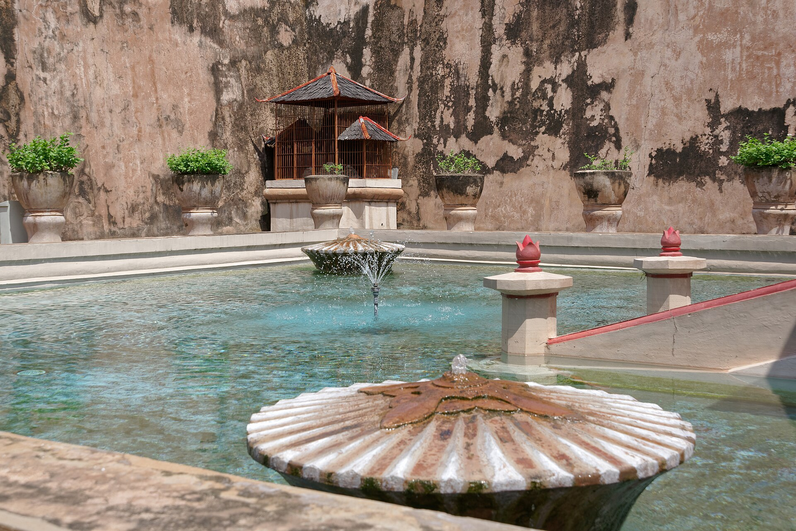
日惹 Patehan 老城區十八世紀王室園林與沐浴池遺構，三段式水池、拱門與半地下的通道構成很強的幾何感。旁邊的 Sumur Gumuling 環形地下清真寺有一組交叉樓梯，是日惹最常被拍的取景點之一。園區不大但巷弄密集，容易走錯，建議順著標識單向走。
開放約 09:00–15:00 · 全年開放
Google Maps ↗官網 ↗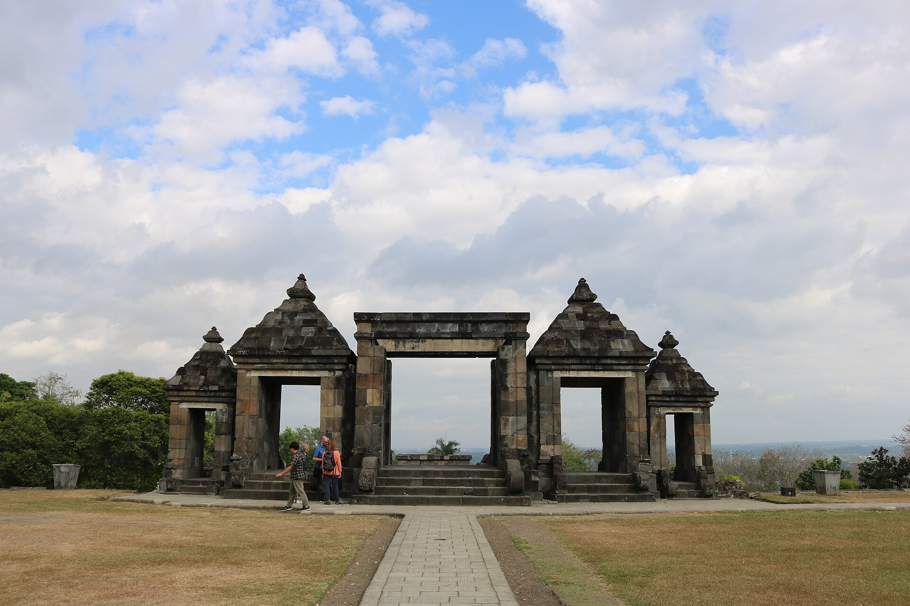
斯萊曼 · 普蘭巴南南側臺地建在高臺上的宮殿遺址，標誌是兩重巨大的石砌門闕，往西可以俯瞰日惹平原並在晴天看到默拉皮火山。這裡是日惹最穩的日落機位之一，光線從門闕背後壓過來時人像剪影效果非常好。臺地上風大、樹蔭少，進場前先補水。
開放約 07:00–17:00（日落時段人流集中） · 全年開放
Google Maps ↗官網 ↗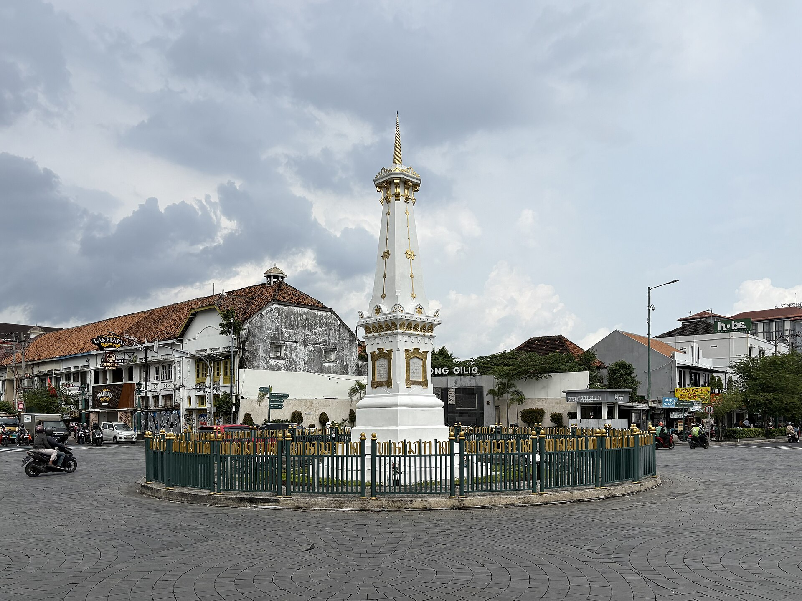
日惹市中心路口白底金頂的城市地標，位於王宮—默拉皮火山這條精神軸線上，是日惹人心中的城市原點。夜裡打燈後是最出片的時段，路口四角都有人排隊合影，需要在斑馬線與安全島之間等訊號燈的間隙拍。白天順路經過看一眼即可，不必久留。
開放全天開放（路口車流大） · 全年開放
Google Maps ↗官網 ↗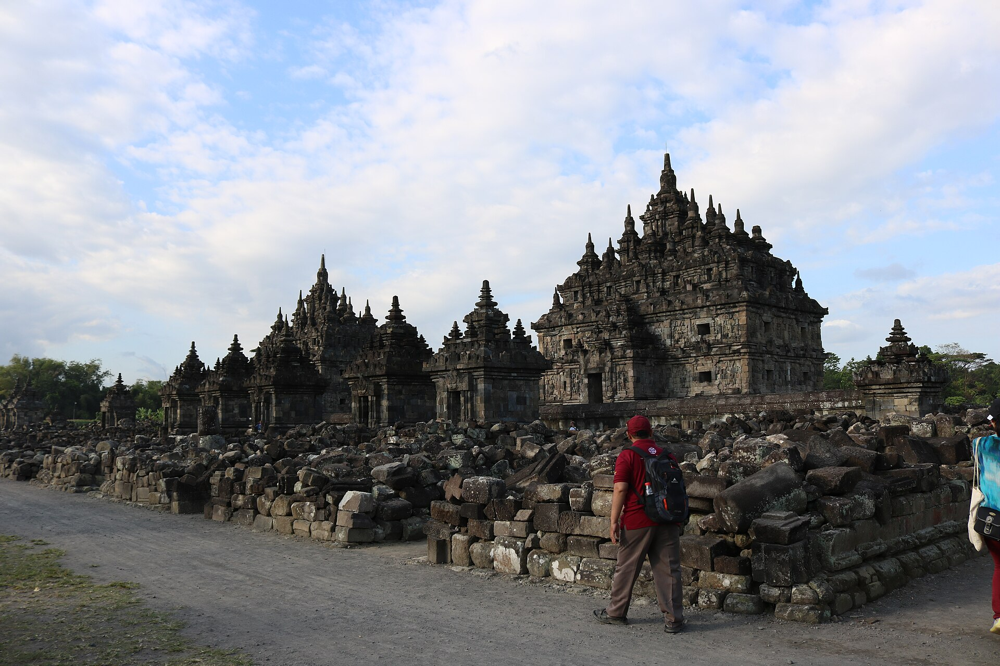
克拉登 · 普蘭巴南東北普蘭巴南東北約兩公里的九世紀佛寺，兩座主殿並立，四周散落上百座小塔與佛龕，被稻田包圍。遊客密度遠低於普蘭巴南，傍晚背景常能同時收進默拉皮火山的輪廓。適合作為普蘭巴南之後的補充，也適合不想擠人潮時替換主景點。
開放約 08:00–17:00 · 全年開放
Google Maps ↗官網 ↗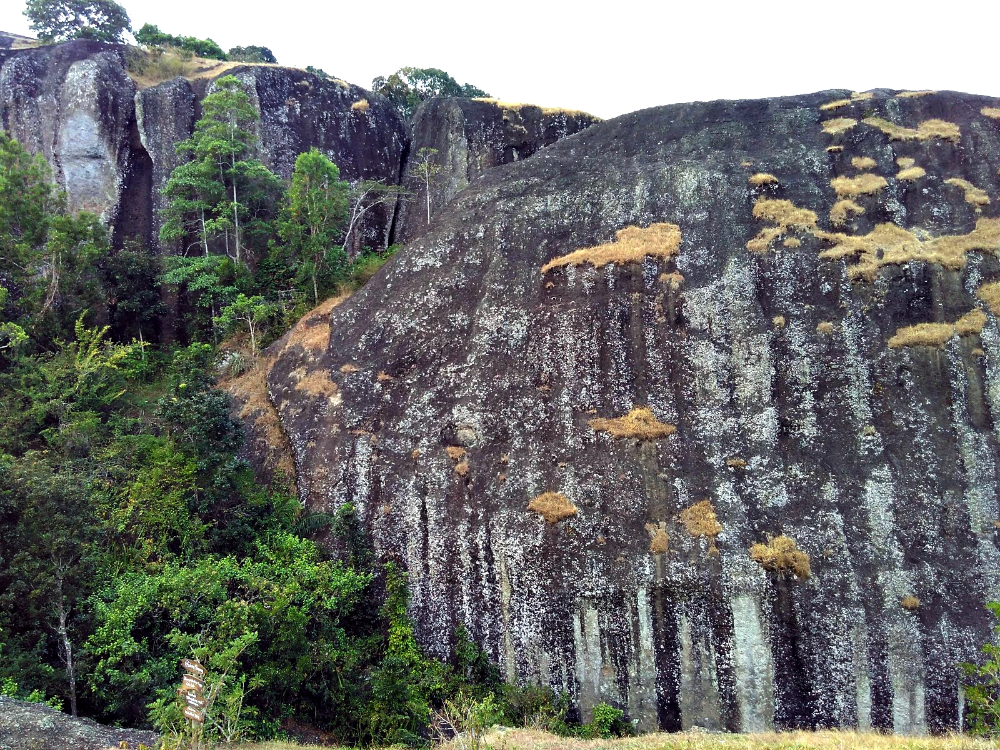
古農基都爾 · Patuk距日惹市區約一小時的死火山遺蹟，整座山體是外露的安山岩巨塊，登頂步道要穿過幾段狹窄石縫。山頂視野可以一路看到日惹平原和南部海岸線，是這趟行程裡最直接的自然地貌體驗。落差不大但路面碎石多，需要抓地力好的鞋。
開放全天開放（建議清晨或傍晚上山） · 雨天山徑溼滑時限流
Google Maps ↗官網 ↗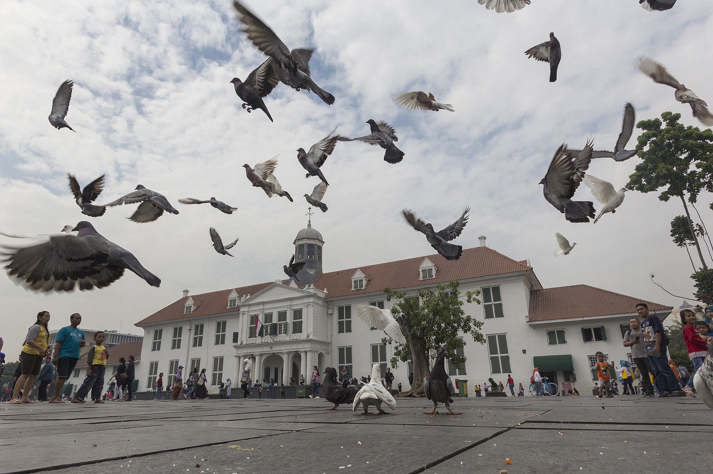
雅加達老城 Kota Tua十八世紀荷屬市政廳改成的博物館，正對法塔希拉廣場。廣場四周集中了老城最完整的殖民時期立面，白天有租彩色腳踏車和戴復古帽拍照的攤位，是雅加達城市漫遊最集中的一段。館內地牢與老傢俱陳列資訊量不小，光線偏暗。
開放約 09:00–15:00（週一多為休館日） · 週一多休館，出發前複核
Google Maps ↗官網 ↗東南亞規模最大的清真寺，白色巨型穹頂與不鏽鋼柱構成極簡的現代主義空間，二層迴廊可以拍到很乾淨的幾何線條。正對面就是新哥特式的雅加達主教座堂，兩座建築隔街相望，是這座城市宗教並置最直觀的一處。入口提供免費導覽與圍裙式罩衫。
開放全天開放，禮拜時段限制遊客動線 · 禮拜時間暫停參觀
Google Maps ↗官網 ↗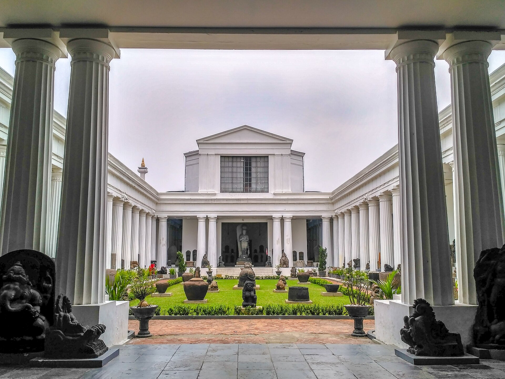
雅加達 Medan Merdeka 西側俗稱「大象博物館」，門前的銅象是標誌。館藏覆蓋史前石器、印度教—佛教造像、南島族群紡織與陶瓷，是理解爪哇文明脈絡最有效的一站。2023 年火災後已重新開放並持續修繕，出發前建議在官網確認當日開放的展廳範圍。
開放約 08:00–18:00（週一多為休館日） · 週一多休館；部分展廳仍在分階段恢復
Google Maps ↗官網 ↗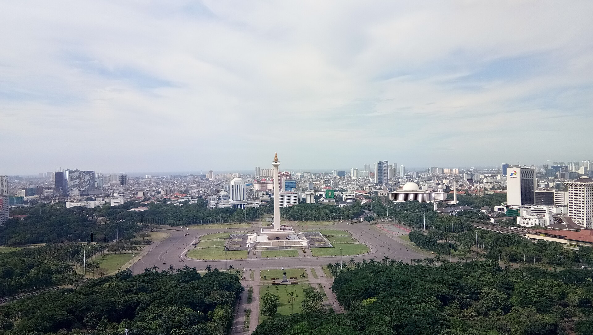
雅加達 Merdeka 廣場高一百三十二米的獨立紀念碑，塔頂包金火焰，立在雅加達最大的開放廣場中央。登頂電梯排隊時間浮動很大，若只是想拍城市天際線，傍晚在廣場草坪一側用長邊構圖往往比排隊登頂更划算。夜間燈光開啟後是老城之外另一種城市面貌。
開放園區約 06:00–21:00（登頂另有場次與限額） · 每月首個週一多為維護日
Google Maps ↗官網 ↗SHOPPING
先看值得走進去的店鋪與集市，再看真正值得帶走的東西。
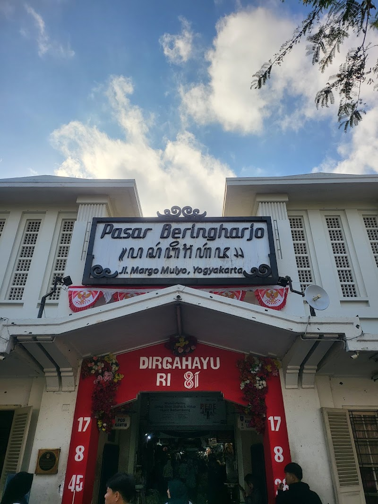
日惹 Malioboro 南段日惹最老也最大的市場，一樓是成卷的蠟染布與成衣，二樓往上是香料、乾貨、舊物與二手書區。價格彈性大，絕大多數攤位預設可以議價，是把「購物」變成一段真實城市體驗的地方。
值得逛 / 買蠟染布料與成衣、印花襯衫、香料與丁香、二手書與舊物攤、Bakpia 與本地零食
先繞一整層再回頭出價，起價通常可以往下談三到五成；布料按米賣，先確認是手繪 tulis、印章 cap 還是機印，價差可以到十倍。隨身包背在身前，人多時段留意扒手。開放：約 08:30–21:00（各攤位收攤時間不一） · 全年開市，節慶日部分攤位休息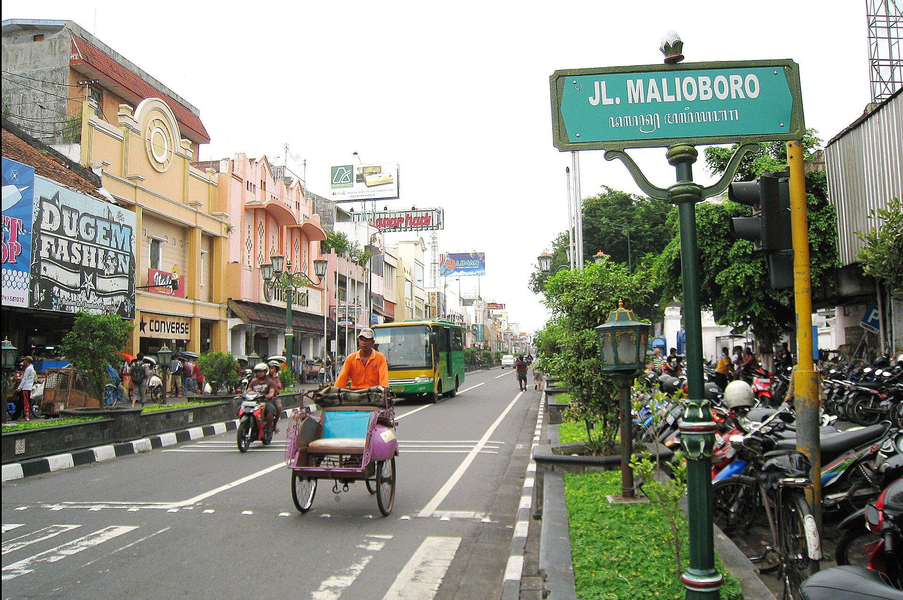
日惹市中心主軸從 Tugu 紀念碑一路通向王宮的城市主街，兩側是蠟染店、皮影與藤編鋪子，人行道近年整治後變寬，晚上燈帶亮起時是日惹最有城市氣息的一段散步路線。街頭有 angkringan 小攤，可以邊走邊吃。
值得逛 / 買蠟染成衣與圍巾、皮影與木雕、藤編包、銀飾小件、街頭 angkringan 小吃
街邊攤與店鋪價差明顯，攤位可議價、店鋪多為標價。爪哇日曆裡的 Selasa Wage（三十五天一次的週二）全街攤販休市改成步行街，出發前查一次日期，免得白跑。開放：商鋪約 09:00–21:00，夜市攤位更晚 · 全年開放；每月 Selasa Wage 為清街日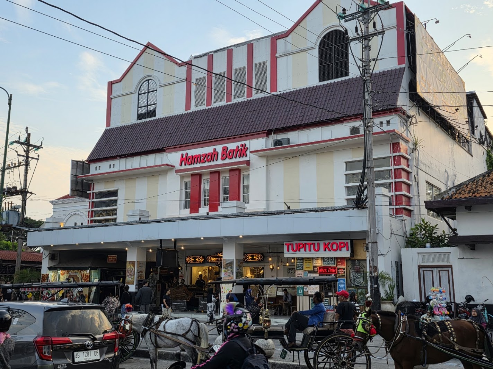
日惹 Malioboro 南端Malioboro 南端的老牌蠟染百貨，前身是 Mirota Batik。整棟從蠟染成衣、圍巾一路排到木雕、香料與零食，標價清楚、可刷卡，是把伴手禮一次買齊最省事的選擇。樓上有小吃區，逛累了可以直接坐下。
值得逛 / 買蠟染襯衫與長巾、藤編與木雕、香料禮盒、Bakpia 與本地零食禮盒
這裡是明碼標價、不議價的店，適合先來摸清行情，再決定要不要去 Beringharjo 市場議價買同類商品。空運託運的木雕與陶器請店員加泡棉包裝，隨身液體類香料油要放託運。開放：約 09:00–21:00（以現場公告為準） · 全年營業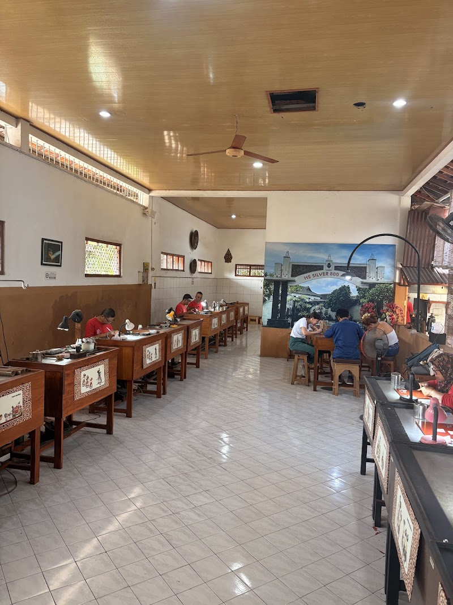
日惹 Kotagede 老銀匠區Kotagede 銀匠區裡規模較大的老字號，前店後廠，可以隔著工作臺看師傅做 filigree 細絲盤繞。成品從耳環、胸針到馬車、船形擺件都有，925 銀含量與重量都會當場稱給你看。
值得逛 / 買filigree 細絲胸針與耳環、銀質微縮馬車擺件、刻字手鐲、婚禮紀念小件
先說明預算與用途，讓店員按克重報價比按款式挑更快。細絲件怕壓，務必要硬盒；回程隨身行李攜帶銀飾沒有問題，但大件擺件建議託運並保留髮票備查。開放：約 09:00–17:00 · 公眾假期可能縮短營業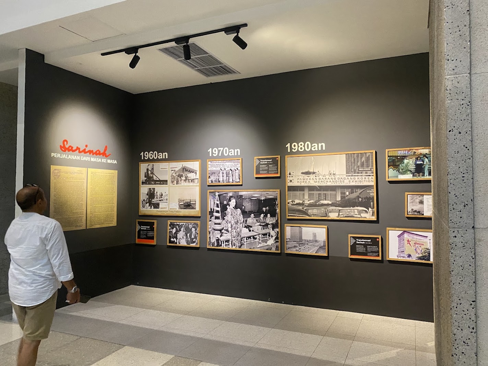
雅加達 Thamrin 大道印尼第一家現代百貨，2022 年整棟翻新後把重心放回本土工藝與設計品牌，蠟染、銀飾、香氛與本地時裝集中在同一棟樓裡，比機場免稅店的選品認真得多。低樓層有本地咖啡與餐飲區，適合逛完老城後回市中心收尾。
值得逛 / 買本土設計師蠟染成衣、群島工藝與家居小物、本地香氛與護膚、精品咖啡豆
工藝樓層的價格高於市場但品質與包裝穩定，適合買送人的一份；退稅櫃檯在館內，單店消費達標才可辦理，結賬時先問清楚。開放：約 10:00–22:00 · 全年營業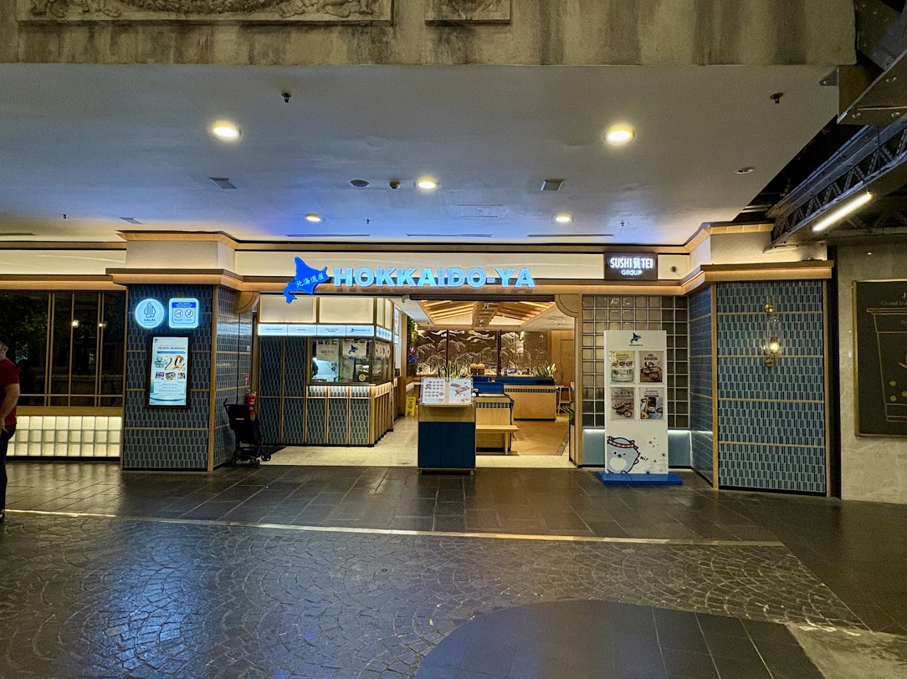
雅加達 Thamrin 商圈雅加達最有代表性的城市綜合體，東西兩館由天橋連線，國際品牌、本地設計、影院與兩百多家餐飲集中在一起。中庭的人工瀑布與燈光裝置是常見的拍照點，也是躲開午後暴雨與高溫最實際的去處。
值得逛 / 買國際服飾與美妝、本地設計師專區、印尼連鎖餐飲、超市伴手禮區
東西館動線容易繞遠，先在導覽圖上定好樓層再走。超市的速溶咖啡、辣醬與蝦片是最省事的批次伴手禮；退稅需在同一商戶單筆達標並在離境機場辦理。開放：約 10:00–22:00 · 全年營業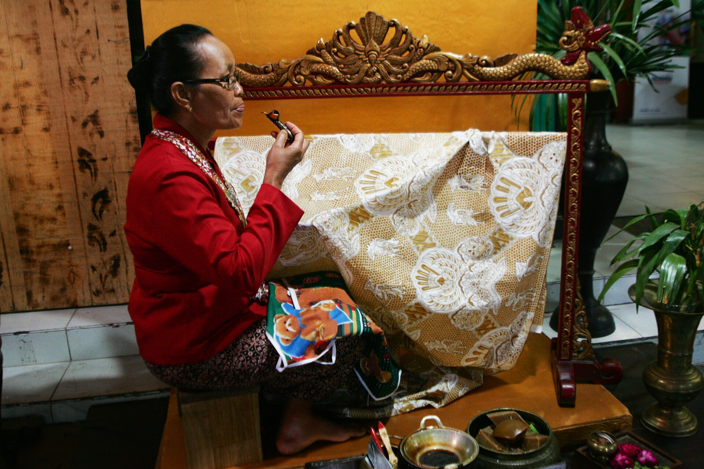
用銅製 canting 蘸蠟一筆一筆畫出圖案再染色的布，日惹風格以褐、靛與米白為主，紋樣剋制。和印章 cap、機器印花相比，手繪布的背面同樣上色、線條會有細微抖動。
為什麼值得買蠟染是印尼列入聯合國教科文組織名錄的代表性工藝，日惹又是最正統的產地之一；一塊布可以當圍巾、桌旗或裁成衣服，比一般紀念品更耐用。
適合送給送給會自己搭配衣服的朋友、家裡需要一塊有質感桌布的人，或想留一件能長期使用的旅行紀念的自己。
哪裡買：Beringharjo 市場一樓布料區可議價；Hamzah Batik 明碼標價、包裝完整；Batik Winotosastro 可以直接從工坊買。翻到布的背面看顏色是否一樣深，只有正面有色的多半是機印。手繪布第一次下水要單獨冷水手洗，先向店家確認是天然染還是化學染，兩者洗滌方式不同。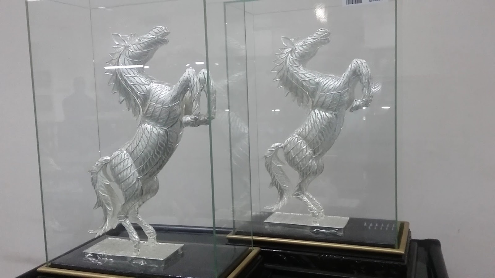
把銀拉成細絲再盤繞焊接成花的傳統技法，成品輕、透光、圖案繁複。Kotagede 從蘇丹王朝時期就是銀器聚落，至今仍是前店後廠的格局。
為什麼值得買體積小、重量輕、單價可控，是這趟行程裡價效比最高的手工藝品；同樣的工藝在其他城市很難買到同等水準。
適合送給送給喜歡細節的女性朋友、需要一件輕便貴重伴手禮的人，或想帶回一件能日常佩戴的紀念品。
哪裡買：Kotagede 的 HS Silver 與 Ansor's Silver 都是老字號；兩家都能看到工坊，也都接受刻字。認準 925 印記並請店家稱重報價，細絲件遇擠壓會變形，一定要硬盒。若要刻字，至少留半天時間取貨，不要排在離開日惹的當天。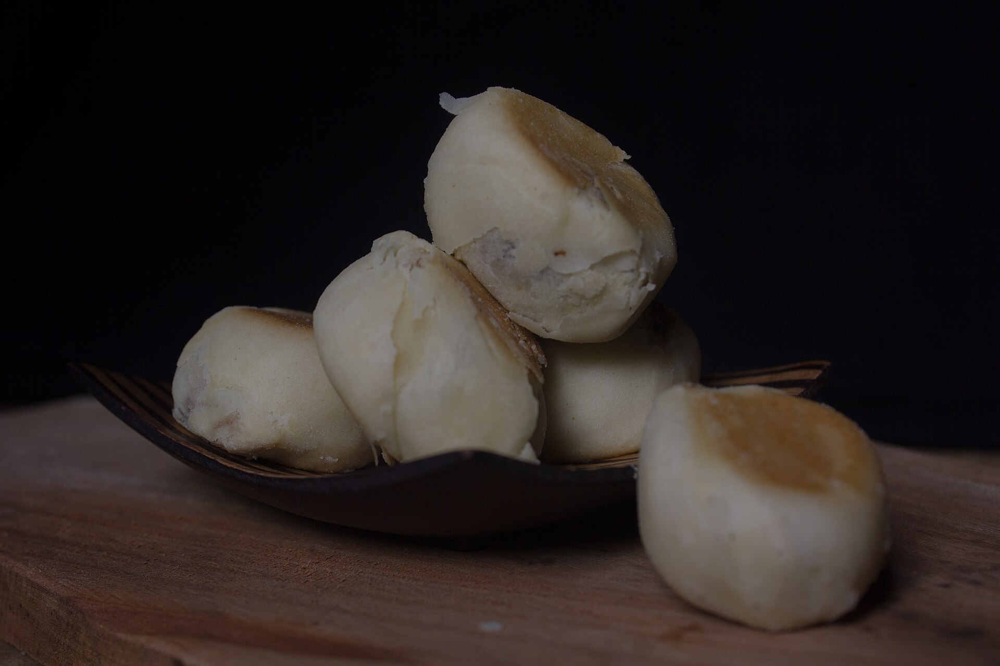
日惹最具代表性的小圓酥餅，外皮薄而層次多，傳統內餡是甜綠豆蓉，近年也有巧克力、芝士與榴蓮口味。名字來自城西的 Pathok 一帶，那裡聚集了大量老作坊。
為什麼值得買分裝成盒、單價低、幾乎人人能接受，是最適合分給同事和親戚的那一種伴手禮；現烤的和量產的口感差別明顯。
適合送給送給公司同事、長輩，或需要一份數量多、便於分裝的禮物時。
哪裡買：Malioboro 沿街與 Hamzah Batik 都有禮盒裝；想買剛出爐的可以在 Pathok 一帶的作坊直接買。傳統綠豆餡保質期通常只有幾天，買之前先問清楚日期，長途帶回請選標註較長保質期的版本。酥皮怕壓，放行李箱時墊在衣物中間。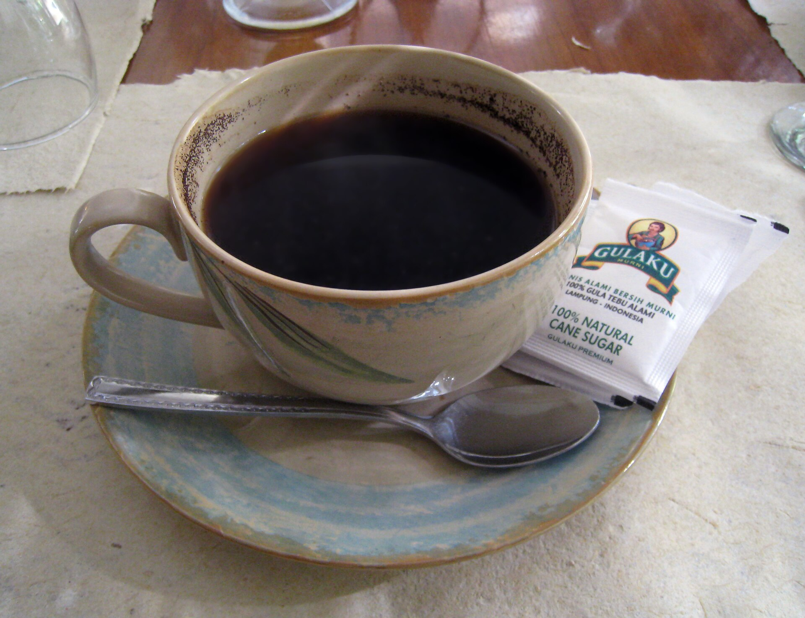
爪哇是阿拉比卡進入亞洲的第一站，島上從 Ijen 高原到 Merapi 山麓都有產區，風味偏厚、酸度低、帶草本與糖蜜感。當地最日常的喝法是不過濾的 kopi tubruk，直接衝粉沉底。
為什麼值得買重量輕、耐存放，能把這段旅程的味道帶回日常；本地精品烘焙店的產地豆價格只有國內同級豆的一部分。
適合送給送給平時自己衝咖啡的朋友，或想把旅行記憶延續到每天早晨的自己。
哪裡買：Sarinah 與 Grand Indonesia 的本地咖啡專櫃選品穩定；日惹市區的精品烘焙店常有 Merapi 山麓的小批次豆。買整豆比買粉更耐放，請店家在包裝上寫明烘焙日期。行李裡咖啡豆味道強，用密封袋再套一層；含液體的即溶咖啡飲料需託運。LOCAL EXPERIENCES
三類當地感最強的專案：手作工藝、夜間表演與火山地貌探索。
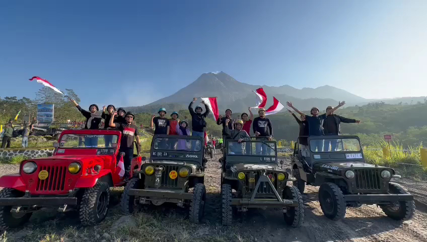
斯萊曼 · Kaliurang 山道 23 公里處坐敞篷吉普沿 2010 年默拉皮火山大噴發留下的火山碎屑流路徑往山上走，沿途會停 Sisa Hartaku 遺物博物館、Batu Alien 巨石與 Kaliadem 掩體幾處，路面是河床卵石與火山灰，顛簸感很強。這是日惹周邊最直接的地質與災後重建現場，也是把「自然風景」變成可講述內容的一段路，短線約兩小時、中線約三小時。
風險評估行程包含河床涉水與陡坡卵石路段，車身敞開且無安全帶，顛簸中相機與手機極易脫手。請全程握緊扶手、把裝置用掛繩固定，頸椎或腰椎不適者應選擇短線；出發前確認當日火山警戒等級與天氣，雨後河床水位上漲時不要堅持涉水路段。
開放約 06:00–17:00（清晨出發視野最好） · 火山警戒等級提高或暴雨時暫停
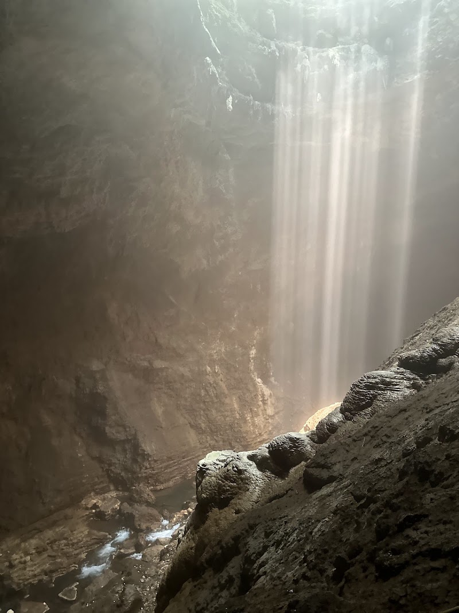
古農基都爾 · Semanu喀斯特地形塌陷形成的豎井，遊客要穿雨鞋、系安全帶由工作人員用繩索垂降約六十米進入底部原始森林，再走一段泥濘通道到另一個洞口，正午前後陽光會從洞頂打下一道近乎實體的光柱。這是日惹最有辨識度也最出片的一項自然體驗，名額按批次限流，必須提前預約。
風險評估全程包含繩索垂降、溼滑巖面與泥濘步道，返程需拉繩上行，對膝蓋與體力有實際要求。請穿可弄髒的長褲與防滑鞋，隨身裝置用防水袋並系掛繩；心血管疾病、幽閉恐懼或近期腿部受傷者不建議參加，雨季地面積水會臨時封閉。
開放約 08:00–14:00（光柱通常出現在上午十點至正午） · 雨季或洞內積水時關閉
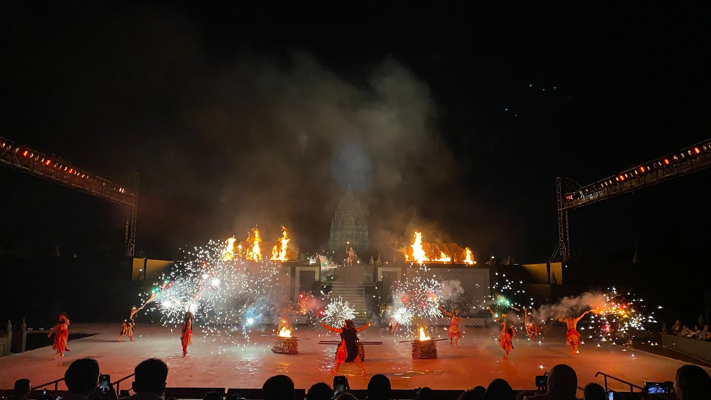
斯萊曼 · 普蘭巴南露天劇場以甘美蘭現場伴奏演出的羅摩衍那史詩舞劇，旱季在露天劇場上演時，背景就是打了燈的普蘭巴南主塔群，舞臺與千年石塔同時進入視野。全場約兩小時、沒有臺詞，靠動作、面具與樂隊推進敘事，即使完全不懂爪哇語也能跟上。座位分割槽售票，越靠前視角越正但塔身會被舞臺遮擋。
開放演出通常為週二、週四、週六 19:30 開演 · 旱季在露天劇場演出，雨季或大雨改至 Trimurti 室內劇場
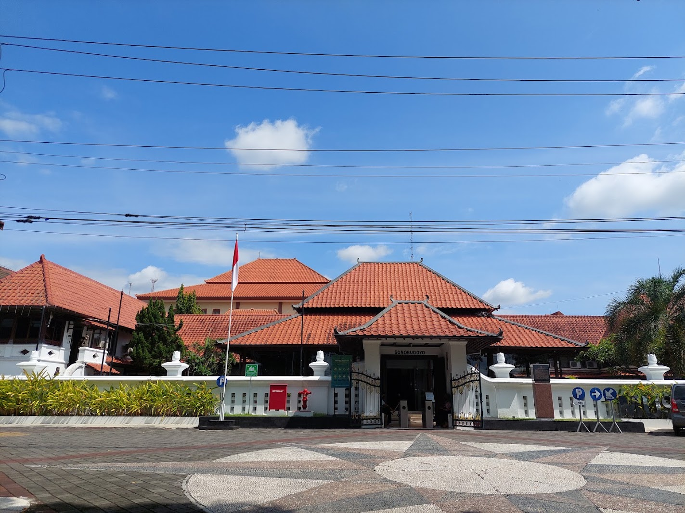
日惹 Pangurakan · 王宮北廣場旁在博物館東側的傳統亭子裡看正統爪哇皮影：一位 dalang 操縱全部皮影並配音，身後是完整的甘美蘭樂班，觀眾可以自由走到幕布另一側看操偶手法。相比面向旅行團的縮短版本，這裡保留了更完整的樂隊編制與敘事節奏，是理解爪哇表演傳統最直接的一晚，票價也很低。
開放夜場通常 20:00–21:30，售票 19:00 起（場次以官方公告為準） · 非固定每晚演出，需先確認當週排期
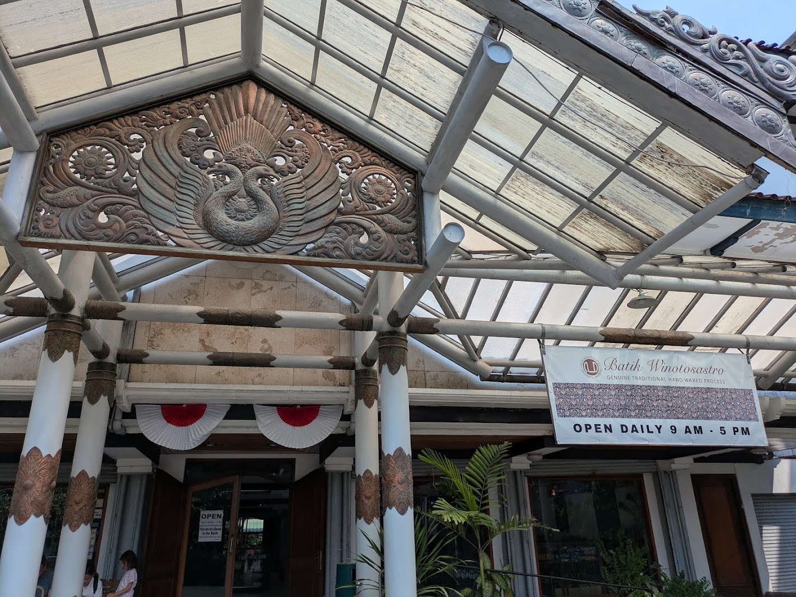
日惹 Tirtodipuran 手工藝街Tirtodipuran 街上的家族蠟染工坊，做的是日惹傳統配色而不是花哨的旅遊款。可以先在車間看整條產線——描稿、用 canting 走蠟、浸染、脫蠟——再自己動手在小塊棉布上畫一幅帶走。課程節奏慢、指導細緻，兩三個小時下來對布料價格差異會有很具體的判斷，之後再去市場買布不容易吃虧。
開放約 09:00–17:00（課程需提前預約） · 公眾假期可能休息
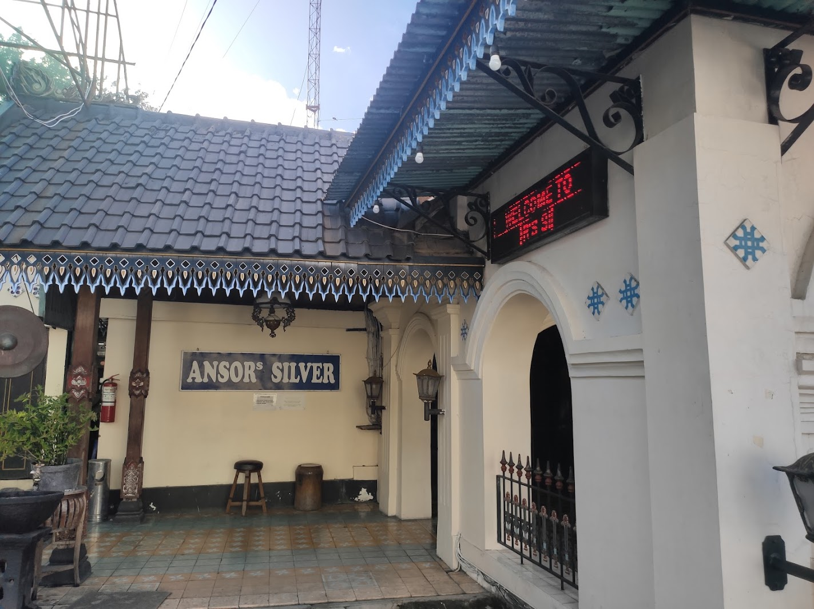
日惹 Kotagede · Tegal GenduKotagede 老銀匠區裡的開放式工坊，工作臺就在參觀動線旁邊，可以近距離看師傅把銀絲拉細、盤成花瓣再一點點焊接。除了買成品，也能報名做一枚自己的戒指或小吊墜，從退火、錘打到拋光都由師傅帶著完成。這條街本身還保留著爪哇—荷蘭混合式的老宅立面，做完手工順路走一圈就是一段安靜的老城散步。
開放約 09:00–17:00（體驗課需當日提前詢問） · 公眾假期可能休息
FOOD GUIDE
先看懂選單，再決定哪幾頓值得專程去，哪幾家可以隨時兜底。
巴掌大的一小包飯，用蕉葉或紙包著，裡面通常是一點點辣炒小魚乾或天貝，配著幾串炸物一起吃。
熱薑湯裡放糯米丸子、花生與椰糖，丸子內餡是碾碎的花生糖，湯帶明顯的薑辣與檸檬草香。
厚約三釐米的發酵鬆餅，出鍋後對摺，中間夾煉乳、花生碎、巧克力米或芝士，切塊裝盒。
綠色的班蘭粉條泡在椰漿與椰糖漿裡，加碎冰，喝起來像會流動的甜品，粉條口感偏軟糯。
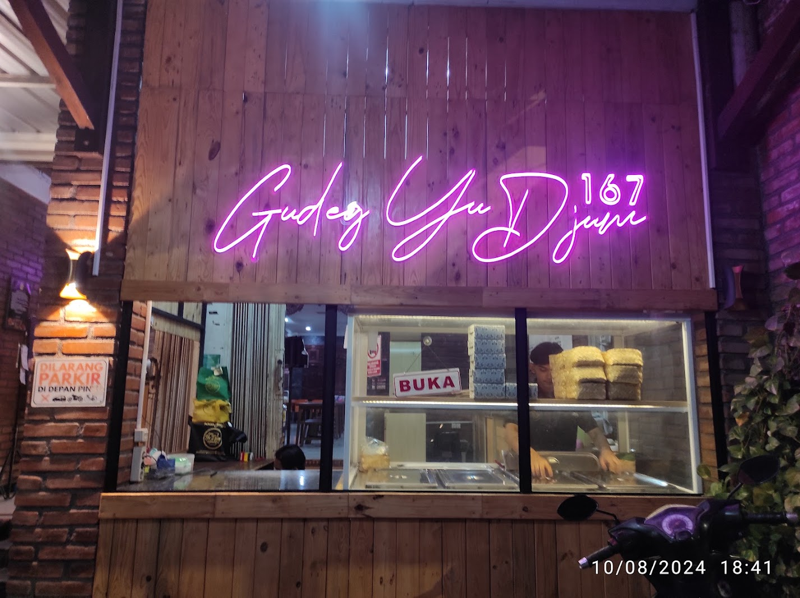
日惹 Wijilan · 王宮東側爪哇 Gudeg 甜味燉菜 · 日惹 Wijilan · 王宮東側
招牌：Gudeg 波羅蜜甜燉菜 · Krecek 辣燉牛皮 · 滷蛋與燉雞腿
第 3 天 · 已安排
為什麼值得去Gudeg 是日惹的城市名片：青波羅蜜加椰糖與柚木葉慢燉到深褐色，甜中帶鹹，通常配辣燉牛皮 krecek 與滷蛋一起裝盤。Wijilan 這條街是 gudeg 老店最集中的一段，Yu Djum 是其中辨識度最高的招牌，從王宮走過來只要幾分鐘，適合把它當成落地日惹的第一頓。
營業約 06:00–22:00 · 全年營業，售完可能提前收攤
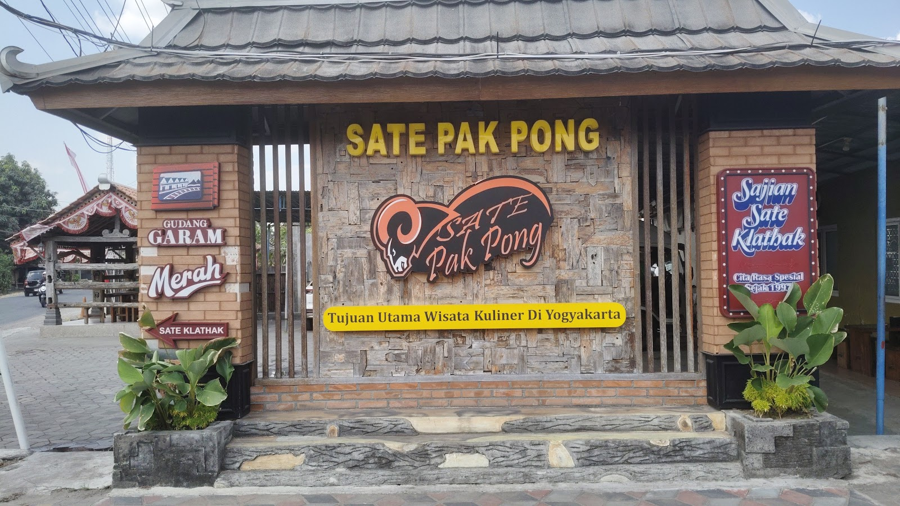
班圖爾 · Jl. Sultan Agung鐵籤鹽烤羊肉沙嗲 · 班圖爾 · Jl. Sultan Agung
招牌：Sate Klathak 腳踏車輻條烤羊肉 · Tongseng 羊肉湯鍋 · Gulai 咖哩羊肉
第 5 天 · 已安排
為什麼值得去Klathak 是日惹南郊班圖爾特有的做法：羊肉只用鹽調味，串在腳踏車輻條上明火直烤，靠金屬導熱讓肉裡外同時熟，配一碗清爽的羊肉湯上桌。和裹滿花生醬的常見沙嗲完全不同，吃的是肉本身的味道。晚上人非常多，屬於值得專程開半小時車過來的一頓。
營業約 09:00–23:30 · 全年營業
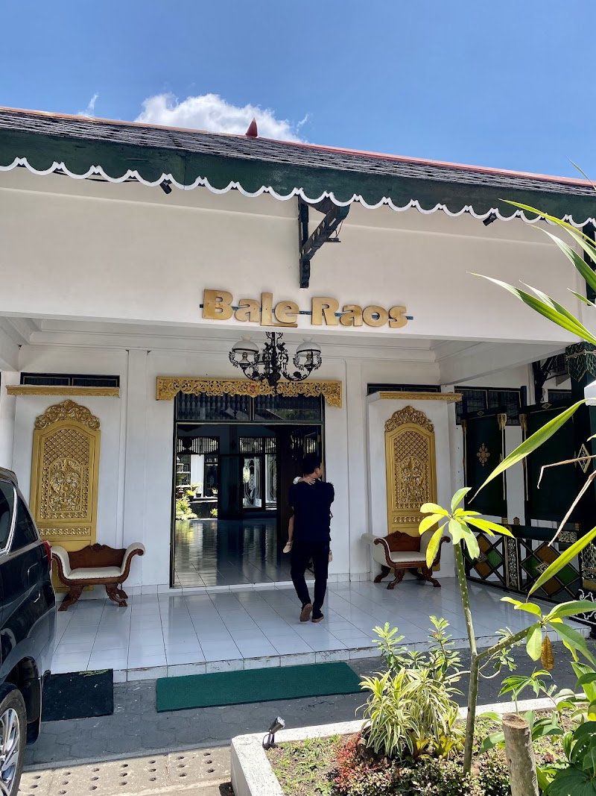
日惹 Magangan · 王宮內側日惹宮廷菜 · 日惹 Magangan · 王宮內側
招牌：Lombok Kethok 青椒燉牛肉 · Bebek Suwar Suwir 香煎鴨 · Bir Jawa 爪哇香料熱飲
第 4 天 · 已安排
為什麼值得去開在王宮圍牆內的餐廳，選單來自歷代蘇丹的日常與宴席菜譜，由王室後人參與整理。木構開放式亭子、爪哇樂聲與相對剋制的甜鹹配比，是這趟行程裡最接近「宮廷味覺」的一頓；不含酒精的 Bir Jawa 用姜、丁香與檸檬草煮成，配著甜口主菜很解膩。
營業約 10:00–22:00 · 全年營業，王室活動期間可能包場
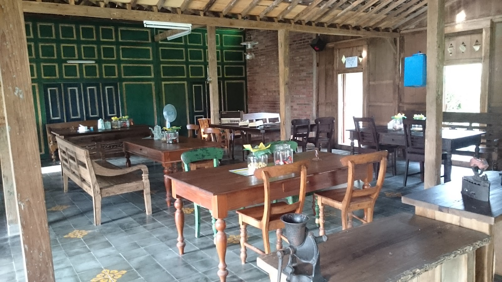
斯萊曼 Pakem · Kaliurang 路 16 公里處爪哇稻田家常菜 · 斯萊曼 Pakem · Kaliurang 路 16 公里處
招牌：Sayur Lodeh 椰奶蔬菜湯 · Telur Dadar 厚蛋餅 · Pisang Goreng 炸香蕉 · Kopi Klotok 現煮咖啡
第 5 天 · 已安排
為什麼值得去開在稻田邊老宅裡的自助式爪哇家常菜：自己拿盤取飯、舀菜，招牌是厚得像蛋糕的煎蛋餅和一大鍋椰奶蔬菜湯，配現煮的 kopi klotok 與剛炸好的香蕉。從默拉皮火山下來正好順路，坐在廊下就能看到水田和遠處山體，是這趟行程裡價效比與畫面感都很高的一頓。
營業約 07:00–22:00 · 全年營業，週末排隊時間長
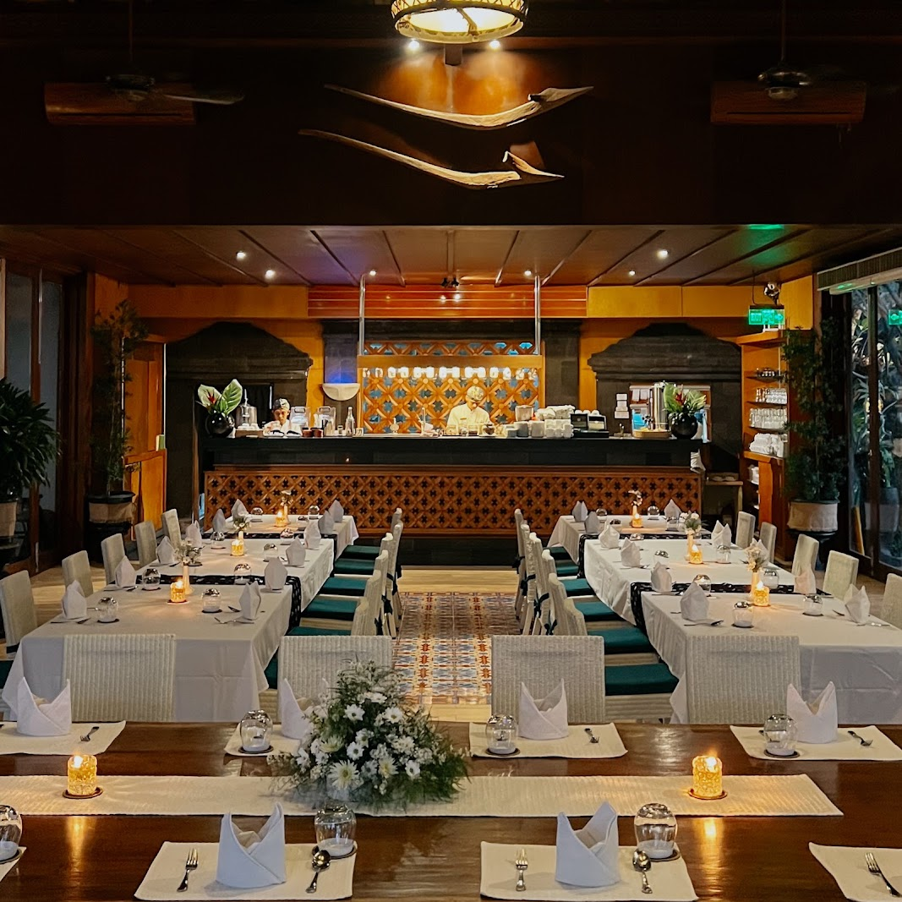
斯萊曼 Sambirejo · 拉圖博科臺地山景餐廳 · 印尼與西式 · 斯萊曼 Sambirejo · 拉圖博科臺地
招牌：Nasi Campur 綜合飯 · 群島沙嗲拼盤 · 印尼炒飯與現烤沙朗
第 6 天 · 已安排
為什麼值得去建在拉圖博科同一條臺地上的露臺餐廳，正對日惹平原，天氣好時能同時看到普蘭巴南塔尖與默拉皮火山的輪廓。選單以印尼菜為主並保留幾道西式主菜，真正的賣點是那面開闊的視野——把它排在拉圖博科日落之前，光線和體力都剛好。靠欄杆的位置需要提前訂。
營業全日供餐，日落時段需預約（以官網與電話確認當日時間） · 全年營業，包場活動期間可能謝客
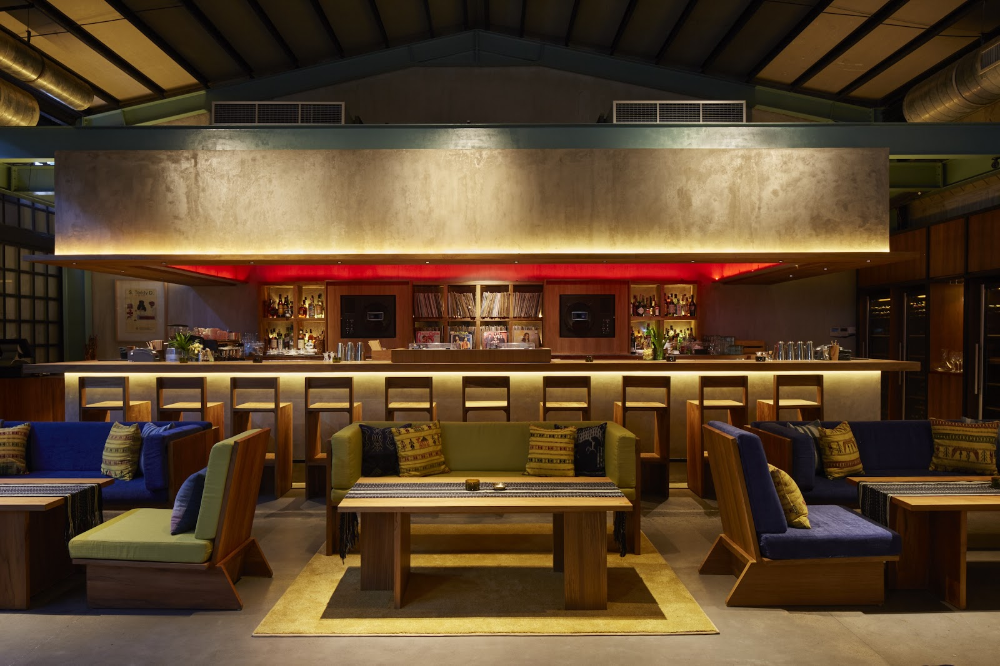
雅加達 Menteng現代印尼群島菜 · 雅加達 Menteng
招牌：Ikan Bakar Pesisir 西蘇門答臘炭烤魚 · 群島沙嗲拼盤 · 本地香料調製雞尾酒
第 1 天 · 已安排
為什麼值得去把印尼六百多個族群的做法重新整理成一份選單：竹筒烤、發酵、地坑燜、石臼手磨與炭火串烤都保留在廚房裡，配一套用本地香料浸漬的酒飲。空間是老宅改造，木料與藤編把「現代印尼」這件事講得很具體，適合當作落地第一晚正式的一頓，也方便向不熟悉印尼菜的人解釋這趟旅行要吃什麼。
營業週日至週四 11:00–22:00，週五、週六 11:00–23:00 · 全年營業，建議提前訂位
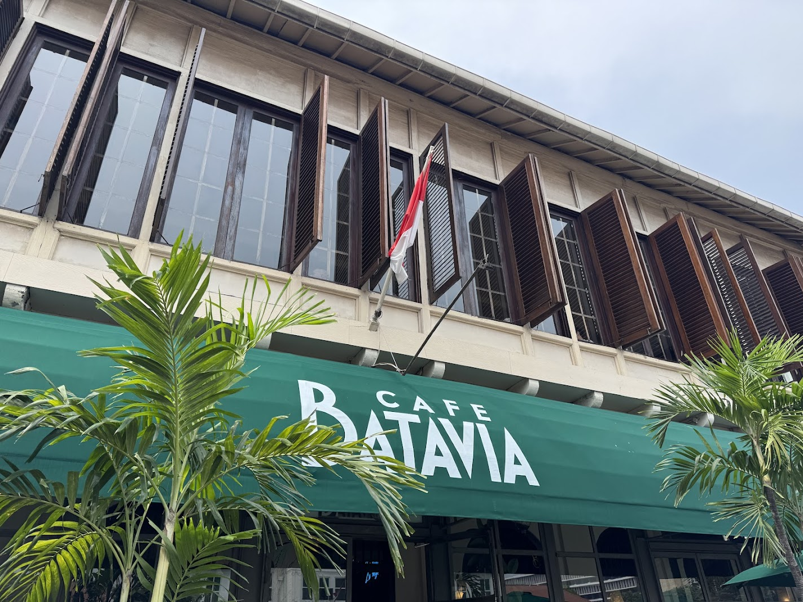
雅加達老城 · 法塔希拉廣場旁老城殖民建築咖啡館 · 雅加達老城 · 法塔希拉廣場旁
招牌：Bitterballen 荷式炸肉丸 · Nasi Goreng 印尼炒飯 · Sop Buntut 牛尾湯
第 2 天 · 已安排
為什麼值得去佔了法塔希拉廣場一整棟十九世紀老樓，二層臨窗座位正對廣場，柚木地板、舊照片牆與吊扇幾乎沒怎麼改動。選單一半是荷式老菜、一半是印尼家常，味道中規中矩，真正值得的是那個空間與窗外的廣場視角——把它排在老城步行動線的中段當作休息點最合適。
營業約 08:00–24:00 · 全年營業
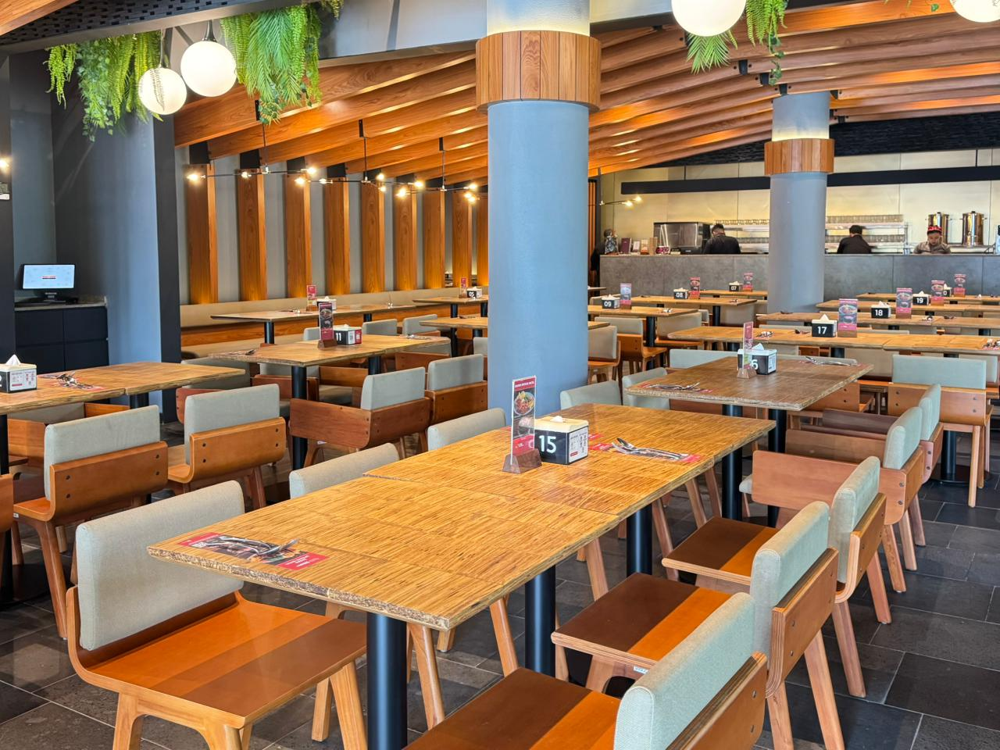
雅加達 Menteng · Cokroaminoto 路印尼連鎖烤串與家常菜 · 雅加達 Menteng · Cokroaminoto 路
招牌：Sate Ayam 雞肉沙嗲 · Gado-Gado 花生醬蔬菜沙拉 · Sop Buntut 牛尾湯
備選 · 按區域順路加入
為什麼值得去在雅加達開了幾十年的本地連鎖，分店多、出餐穩定、有空調和清楚的圖文選單，是第一次吃印尼菜時最省心的入門選擇。沙嗲、加多加多與牛尾湯這幾樣常年不變，晚到、下雨或不想再排隊時，它是很可靠的兜底。
營業約 10:00–22:00 · 全年營業
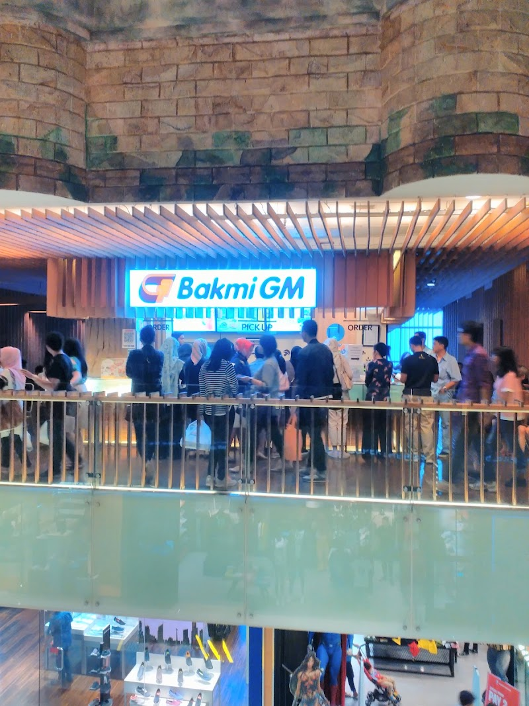
雅加達 Grand Indonesia 西館 5 樓印尼連鎖湯麵與餛飩 · 雅加達 Grand Indonesia 西館 5 樓
招牌：Bakmi Spesial 招牌拌麵 · Pangsit Goreng 炸餛飩 · Bakmi Ayam Jamur 香菇雞絲麵
備選 · 按區域順路加入
為什麼值得去印尼華人風味的老牌連鎖麵館，招牌是幹拌細面配一小碗清湯，加一份現炸餛飩。位置就在 Grand Indonesia 五樓的餐飲區，逛完商場不用換地方，口味溫和不辣，適合吃了幾天重口印尼菜之後調劑一頓。
營業約 10:00–21:30 · 隨商場營業日
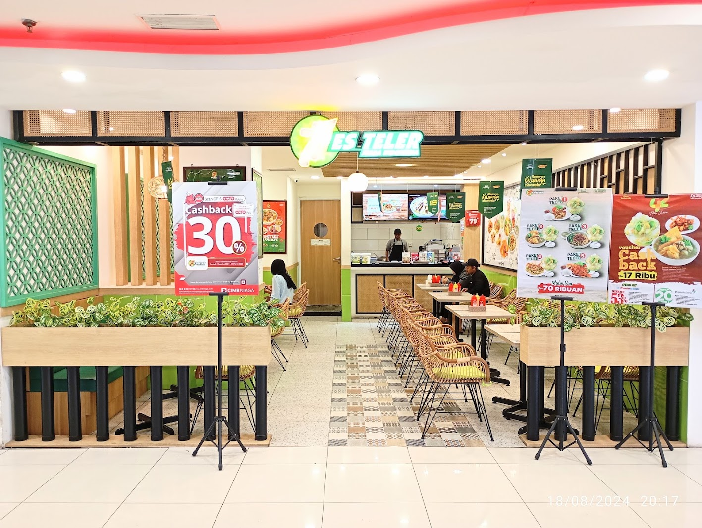
日惹 Malioboro Mall 地下層印尼連鎖冰品與簡餐 · 日惹 Malioboro Mall 地下層
招牌：Es Teler 牛油果椰肉刨冰 · Bakso 牛肉丸湯 · Mie Ayam 雞絲麵
第 7 天 · 已安排
為什麼值得去全國連鎖的老牌冰品與簡餐店，招牌 es teler 是牛油果、椰肉與菠蘿蜜加煉乳刨冰，在日惹的午後非常解暑。位置就在 Malioboro 街上的商場裡，有空調、有洗手間、出餐快，逛街或走完一天路之後想省力吃一頓時最合適。
營業約 10:00–21:30 · 隨商場營業日
BEFORE DEPARTURE
按時間順序處理真正影響這趟行程的預約、證件與裝備。
按類別勾選，進度會儲存在這臺裝置。
按時間順序處理真正會影響行程的事項。
LANGUAGE COMPANION
印尼語高頻詞與現場句子，另附一份英語備用。
HIGH-FREQUENCY PHRASES
Untuk dua orang, ya.溫圖 杜阿 奧朗 亞兩個人用餐。
Yang tidak pedas, boleh?揚 迪達 佩達斯 波累可以做不辣的嗎？
Sambalnya dipisah, ya.桑巴爾尼亞 迪比薩 亞辣醬請另外裝小碟。
Ini yang paling terkenal apa?伊尼 揚 巴靈 德爾克納爾 阿巴你們這裡最有名的是哪一道？
Minta bon, ya.民塔 蓬 亞請給我賬單。
Tolong ke alamat ini.多隆 克 阿拉瑪 伊尼請送我到這個地址。
Pakai argo, ya.巴凱 阿爾戈 亞請按計價器計費。
Berapa lama ke sana?貝拉巴 拉馬 克 薩納到那裡要多久？
Tunggu sebentar, ya.通古 斯本塔爾 亞請稍等一下。
Saya turun di depan.薩亞 圖倫 迪 德班我在前面下車。
Ini batik tulis atau cap?伊尼 巴迪 圖利斯 阿陶 恰普這是手繪蠟染還是印章蠟染？
Kalau ambil dua, berapa?卡勞 安比爾 杜阿 貝拉巴買兩件的話多少錢？
Boleh lihat yang lain?波累 利哈 揚 拉因可以看看別的款嗎？
Saya pikir dulu, terima kasih.薩亞 比基爾 杜盧 德里馬 卡西我再考慮一下，謝謝。
Tolong dibungkus yang aman.多隆 迪布恩庫斯 揚 阿曼請幫我包得牢一點。
Bisa titip koper sampai sore?比薩 迪迪 科佩爾 桑拜 索雷行李可以寄存到下午嗎？
AC-nya tidak dingin.阿賽尼亞 迪達 丁因空調不製冷。
Wifi-nya apa passwordnya?維菲尼亞 阿巴 帕斯沃德尼亞無線網路的密碼是什麼？
Saya butuh apotek terdekat.薩亞 布圖 阿波德 德爾德卡我需要最近的藥店。
Tolong panggil taksi.多隆 邦吉爾 達西請幫我叫一輛計程車。
Boleh saya foto di sini?波累 薩亞 佛多 迪 西尼我可以在這裡拍照嗎？
Jam berapa tutup?詹 貝拉巴 圖圖普幾點關門？
Di mana pintu masuk?迪 馬納 賓圖 馬蘇入口在哪裡？
Apakah ada pertunjukan hari ini?阿巴卡 阿達 佩爾通朱坎 哈里 伊尼今天有演出嗎？
Terima kasih, bagus sekali.德里馬 卡西 巴古斯 斯卡利謝謝，非常精彩。
HIGH-FREQUENCY PHRASES
Could I store my luggage until the afternoon?行李可以寄存到下午嗎？
Is early check-in possible today?今天可以提前入住嗎？
Where can I buy a local SIM card?哪裡可以買本地電話卡？
Could you write the address in Indonesian?可以幫我把地址寫成印尼文嗎？
What time does the airport train leave?機場鐵路幾點發車？
Not spicy, please, and chilli on the side.請不要辣，辣醬另外裝。
Is the service charge already included?賬單裡已經含服務費了嗎？
Which dish is the house speciality?哪一道是你們的招牌菜？
Can we have a table by the window?可以給我們靠窗的位置嗎？
We would like to pay by card.我們想刷卡結賬。
Please wait here for about one hour.請在這裡等大約一小時。
Can we stop for photos on the way?路上可以停車拍照嗎？
What time should we leave to avoid traffic?為了避開塞車，我們幾點出發比較好？
Is the entrance fee included in this price?這個價格包含門票嗎？
Could you drop us at the main gate?可以在正門放我們下車嗎？
Do I need a separate ticket to climb to the top?登頂需要另外買票嗎？
Is tonight's performance still on?今晚的演出還照常進行嗎？
Which gate is the visitor entrance?遊客入口是哪一個門？
Are photos allowed inside?裡面可以拍照嗎？
How long does the whole show last?整場演出大約多久？
Is this hand-drawn batik or stamped?這是手繪蠟染還是印章蠟染？
Could you pack it so it will not break?可以幫我包裝得不容易碎嗎？
Can I get a receipt for tax refund?可以開一張能退稅的收據嗎？
Where is the nearest pharmacy?最近的藥店在哪裡？
My card was declined, may I pay cash?我的卡刷不過，可以付現金嗎？
LOCAL TRAVEL NOTES
天氣、禮儀、交通、安全與支付，五個摺疊裡放二十條能直接用的判斷。
爪哇低地全年白天多在三十至三十三度之間，溼度高，體感比數字更熱。行程裡凡是遺址與露天景點都安排在上午或傍晚，正午留給室內或用餐。
旱季末尾常出現下午兩三點的短時強降雨，一般四十分鐘內結束。隨身帶薄雨衣比帶傘方便，露天演出遇大雨會改到室內劇場，出門前先看一次當地天氣。
默拉皮山麓與古火山清晨只有二十度上下，山風大且吉普車是敞篷的。出發時穿一件薄外套，到山下熱了再脫，比全天短袖舒服很多。
赤道附近的紫外線指數長期處於很高的區間，遺址區幾乎沒有遮蔭。寬簷帽、防曬霜與長袖三樣至少備兩樣，補塗時間控制在兩小時一次。
清真寺要求過膝、遮肩，女性需包頭巾，入口通常提供免費罩衫。王宮同樣不接受短褲與吊帶，出發前把長褲長袖放進當天的包裡更省事。
當地習慣把左手視為不潔，遞錢、遞名片或接東西都用右手。用手抓飯的場合同樣只用右手，需要兩隻手時可以先說一句 permisi。
攤主與手工藝師傅多數樂意入鏡，但一定要先用手勢示意並等對方點頭。正在禮拜的人群不要拍攝，皮影與舞劇演出請關閉閃光燈與快門聲。
爪哇文化推崇剋制與間接表達，公共場合大聲說話會被視為失禮。指路時用拇指或整隻手掌，不要用食指直指他人。
Grab 與 Gojek 在雅加達和日惹覆蓋都很好，價格透明且免去議價。上車前核對車牌與司機姓名，大件行李請選四輪車而不是摩托選項。
從 Tugu 車站到日惹國際機場約四十分鐘，班次間隔約四十分鐘，不受路面擁堵影響。返程按航班時間倒推兩班車次預留緩衝，行李需自己搬運上下車。
婆羅浮屠、普蘭巴南與古火山之間距離長且回程難叫車，按天包車含司機通常比逐段叫車更省錢省心。談價時先講清停靠點、等候時間與是否含停車費。
工作日早傍晚尖峰的雅加達市區車速極慢，同樣距離耗時可能翻倍。把跨區移動放在上午十點後或晚上八點後，中區幾個景點之間儘量步行。
Beringharjo 市場與 Malioboro 夜晚人流密集，扒竊是最常見的問題。把揹包換到身前、手機放內袋，拍照時不要把裝置長時間舉在人群上方。
吉普車沒有安全帶且顛簸劇烈，洞穴需要繩索垂降與溼滑步道行走。頸腰椎不適、心血管疾病或近期腿部受傷者應改選短線或直接跳過。
全境自來水不可直接飲用，刷牙也建議用瓶裝水。正規餐廳的工廠製冰塊可以放心，路邊攤不確定時直接說 tanpa es 更保險。
默拉皮是活火山，警戒等級提高時吉普線路會縮短或暫停。出發前一天檢視當地公告，不要為了行程完整去接近禁入區域。
市場議價、路邊攤、停車與小費都需要現金，隨身備一疊一萬到五萬盾的小鈔。機場只換夠當天用的部分，市區兌換點的匯率通常更好。
商場、連鎖餐廳與酒店普遍可刷卡，獨立小店與攤位多數不行。本地QR Code支付需要當地賬戶，遊客更實際的組合是現金加信用卡。
中高價餐廳通常加收約一成服務費與一成一的稅，賬單上會寫成 service 與 tax。已含服務費就不必再額外給小費，找零的小鈔可以留給代客泊車。
在參與退稅計劃的商戶單筆消費達標才能申請，結賬時要主動索取專用發票。退稅手續在離境機場辦理，請把商品留在隨身行李中以備查驗。